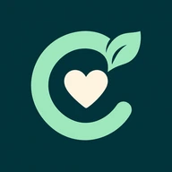

Chez Team
Chez Health
Tu guía semanal de alimentos
Más variedad, semana a semana.
Marca cada ingesta y revisa de un vistazo qué alimentos has incluido.
Esta semana
Progreso
Ingestas registradas
Una casilla por ingesta